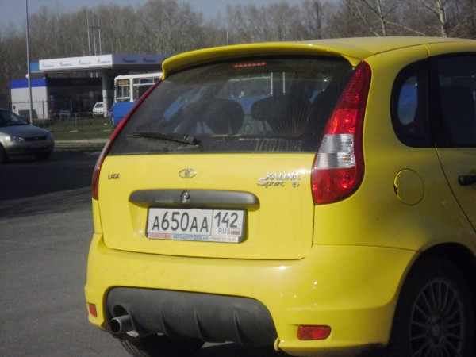

Автомобилей с каждым годом становится всё больше и каждый чересчур уважающий себя автомобилист стремится из общей массы выделиться. Кто-то приклеит надпись «Пахан», кто-то установит прямоток (чтобы шумно, а чтоб «пёрло аж ваще»).
Люди побогаче бывает даже полностью перекрашивают машины, а люди со знакомыми в ГИБДД пытаются при регистрации повесить номер, который и удачу принесёт и оберегом от сотрудников ГИБДД станет. Это может быть, к примеру симметричный номер, а может быть даже номер из отдельной, крутой серии. Говорят даже платят за это деньги, но это конечно только слухи.
Стоит отметить, что в последний год становится всё заметнее, что кемеровское ГИБДД с «блатными» сериями «наигралось». Может виной тому федеральные веяния, а может и правда надоело, мне неизвестно.
Первой весточкой стала дискредитация несколько лет назад серии ААА. Эта серия совсем недолго присутствовала на дорогих автомобилях, ценность её спустя небольшой промежуток времени начала падать, потом такие номера вовсе стали раздавать направо-налево.
С полгода назад крутую серию ХХХ вовсе слили практически изначально. Это конечно не относится к номерам с двумя нулями (их как и прежде делают по блату, но в основном вся серия ушла в массы.)
Первые номера нового 142 региона ААА тоже повторили судьбу трёх иксов. Введение этой серии, к тому же совпало с введением новых правил регистрации, и говорят были такие люди, которые специально для получения номера с «красивой» серией снимали-ставили свой автомобиль на учёт.

История «блатных» серий в Кемерове (кроме перечисленных трёх иксов и ААА) по моим прикидкам выглядит примерно так:
ТТТ (Транспорт Товарища Тулеева) — это не администрация области, ну т.е. не только администрация. Гарантировано администрация наверно лишь первая десятка номеров. С большой долей вероятности можно утверждать, что это автомобили губернатора и его замов. номера ТТТ весят еще и на автобусы
PPP — в большинстве своем автомобили прокуратуры и приближенных лиц. Такие номера, по собственному пониманию ГАИ не останавливает. Их, кстати, не очень много. PPP потому что Прокуратура, а кириллическую П использовать в номерах нельзя — в номерах используются только латинские буквы
Есть еще серия ООО — три Ольги. Наверное самая первая «блатная серия», несмотря на то, что очень стара, серия до сих пор не дискредитирована и за незначительные нарушения остановлена скорее не будет. С большой вероятностью в ней едет человек со связями, либо его шофер. Хотя в последнее время серия всё-таки стала потихоньку исчезать. Перекликается еще с коммунистическими номерами, когда автомобили секретарей райкомов носили номера начинающиеся с двух нолей.
Серия АКО появилась практически сразу с появлением 3-значных номеров и ставилась не только не автомобили администрации области, но и на автомобили администраций городов и районов. Так как появилась во времена, когда еще многое значили не деньги, а именно связи, большинство номеров серии стояли именно на ведомственных автомобилях.
Серия АКМ, лет 7 назад пришла на смену популярной тогда серии КУМ, серию КУМ тогда практически вывели из оборота. Расшифровывают и как Ассоциация Кузбасских Милиционеров и как Автохозяйство Контролируемое Мовшиным. В любом случае непосредственная связь именно с милицией имеется. Изначально вешалась на серьезные автомобили серьезных людей. В данное время сильно дискредитирована. Серия КУМ, в последнее время, кстати стала появляться вновь.
Серии МУР, УУР, и MВD ставятся на автомобили ГУВД по Кемеровской области.
Есть еще личная серия бывшего начальника ГУВД генерала А.В.Виноградова — АВВ